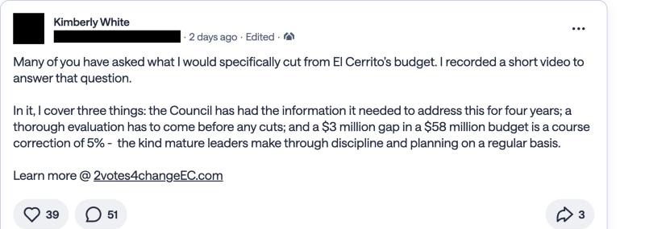
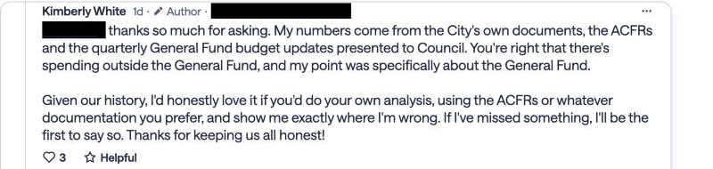
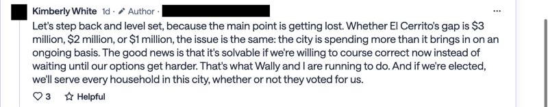
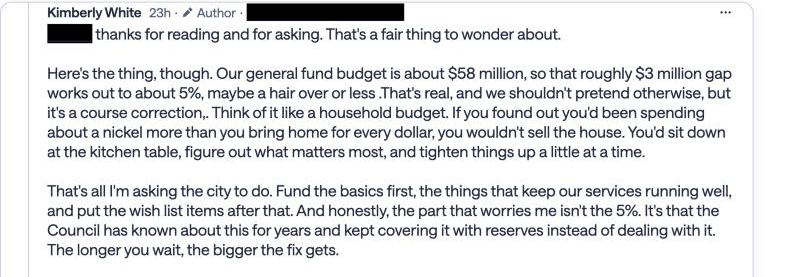
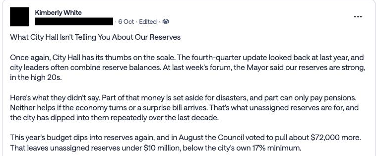
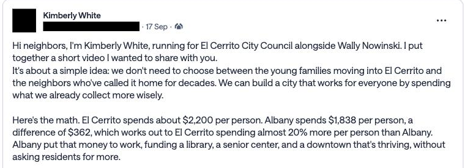
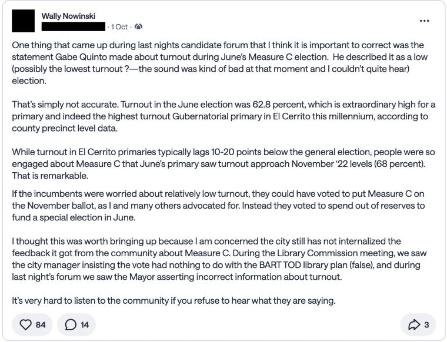
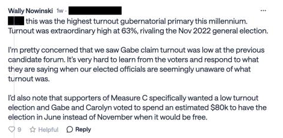
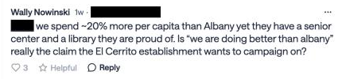

Statements about the City's finances by all six candidates, checked with the same rubric used for Ira Sharenow's Finance pages.
Statements about the City's finances from ballot statements, campaign sites, the September 30, 2026 League of Women Voters forum and the candidates' own public Nextdoor posts and replies, checked with the same rubric. Forum quotes are lightly trimmed from the auto-generated captions. Nextdoor quotes are the candidates' own words; as of October 19, 2026, Gabe Quinto, Carolyn Wysinger, MJ Jawili and Forrest Lanning had no finance claims on Nextdoor to check. Asked on Nextdoor where her figures come from, White pointed to the City's ACFRs and quarterly General Fund updates (screenshot).
| Candidate | Claim | Verdict | What the data shows |
|---|---|---|---|
| Kimberly White | "El Cerrito currently spends about $3 million a year more than it brings in" (forum) | Not supported | Revenue exceeded expenditures FY2020–FY2025. Net change in fund balance was +$1.36M in FY2025 and −$1.08M in FY2026 (preliminary). $3M matches only the planned FY2026 draw after amendments. |
| Kimberly White | "A $3 million gap in a $58 million budget is a course correction of 5%"; "the Council has known about this for years and kept covering it with reserves" (Nextdoor, Oct. 17–18)Screenshots: White post, Oct. 17, White reply, Oct. 18 | Not supported | The General Fund balance rose from −$0.1M (FY2020) to $24.3M (FY2025). Reserves were drawn in FY2024 (−$0.25M) and FY2026 (−$1.08M preliminary), not every year. $3M is the FY2026 draw as planned after amendments, not the result. |
| Kimberly White | "Whether El Cerrito's gap is $3 million, $2 million, or $1 million … the city is spending more than it brings in on an ongoing basis" (Nextdoor reply)Screenshot: White reply, Oct. 18 | Partly accurate | In the past, no: draws came in 2 of the last 6 years and were driven by one-time Council additions (FY2026: a one-time Successor Agency dissolution cost of over $1M, Swim Center $0.95M, AV system $0.32M, districting $0.25M). Looking ahead, partly: the adopted FY2026-28 budget projects draws that take the unassigned reserve to 18% and then 16%. |
| Kimberly White | "This particular budget sends [the unassigned reserve] below 17%" (forum) | Accurate | The adopted FY2026-28 budget projects 18% in FY2027 and 16% in FY2028. Today's level is above policy (26% in FY2025). |
| Kimberly White | "That leaves unassigned reserves under $10 million, below the city's own 17% minimum"; disaster and pension money "doesn't help if the economy turns" (Nextdoor, Oct. 6)Screenshot: White post, Oct. 6 | Premature | The City's Q4 estimate for June 2026 is 22% unassigned. The budget projects $10.4M (18%) for FY2027 and $9.8M (16%) for FY2028, so "under $10M, below 17%" describes the FY2028 projection, not today. Her point that the disaster reserve and the Section 115 pension trust aren't free for general use is correct. The "$72,000 more" August vote wasn't found in the packets reviewed. |
| Kimberly White | "Our budget is now balanced … by the use of reserves" (forum) | Partly accurate | FY2024 (−$0.25M) and FY2026 (−$1.08M) drew on reserves, mainly for Council-approved one-time items; FY2025 added $1.36M. |
| White / Nowinski | "$80.4 million unfunded pension liability … only the minimum payments" (campaign site) | Accurate | CalPERS' June 30, 2025 valuations show $80.35M unfunded across both plans. Beyond required payments, the City has put $3M into a pension trust ($1M in FY2024). |
| White / Nowinski | "El Cerrito spends 20% more per resident than Albany" (campaign site, videos, forum, Nextdoor)Screenshots: White post, Sept. 17, Nowinski reply, Oct. 7 | Outdated | State Controller data: 32% more in FY2019, 7% more in FY2024 ($2,439 vs. $2,281). Albany's per-resident spending grew 47% in that period, El Cerrito's 19%. White's Sept. 17 Nextdoor post cites $2,200 vs. $1,838 without a source or year. |
| Wally Nowinski | "We spend millions of dollars out of the reserves for emergency pool repairs" (forum) | Overstated | Pool repair $500K (FY2025) and Swim Center $945K (FY2026): about $1.45M over two years. |
| Wally Nowinski | Incumbents "voted to spend out of reserves to fund a special election in June"; "an estimated $80k … instead of November when it would be free" (Nextdoor, Oct. 1 and 10; shared by White)Screenshots: Nowinski post, Oct. 1, Nowinski reply, Oct. 10 | Mostly accurate | The FY2026 Q4 update lists $80,163 in special election costs among Council-approved amendments. "Free" overstates it: cities are normally billed for measures on a consolidated November ballot too, though usually for much less. |
| Wally Nowinski | The City dips into reserves for fire engines and "predictable raises" (forum) | Accurate | Fire truck set-aside $380K (FY2025) and $1.5M one-time fire equipment (FY2027-28); labor contract additions $391K (FY2025) and $120K (FY2026). |
| Gabe Quinto | "We have turned around our budget" (forum) | Accurate | General Fund balance went from −$0.1M (FY2020) to $24.3M (FY2025); short-term borrowing ended; high-risk designation removed. |
| Gabe Quinto | "Right now we're at 29–30% in reserves" (forum) | Accurate | Matches the City's adopted-budget projection (29%). The audited FY2025 level was higher (41% including the disaster reserve). |
| Gabe Quinto | "We do not overspend … we are living within our means" (forum) | Partly accurate | Structural position has improved and reserves are above policy, but spending exceeded the original budget in FY2024–26 and FY2026 drew $1.1M from reserves. |
| Quinto, Wysinger | S&P raised the City's bond rating to A+ (ballot statements) | Partly accurate | Per the rating history on Ira Sharenow's Finance pages, A+ is the rating on the sales tax revenue bonds. The City's underlying general rating (on its certificates of participation) is A−. Both were upgraded in 2025. |
| Carolyn Wysinger | "Our highest revenue stream is the real estate transfer tax" (forum) | Inaccurate | FY2025: property tax $18.9M, sales tax $12.1M, utility users tax $4.2M, transfer tax $3.2M. The point that it is the most volatile is fair. |
| Carolyn Wysinger | Finance staff forecast transfer-tax revenue conservatively (forum) | Accurate | Transfer tax beat budget by 7% in FY2025 and 13% in FY2026. |
| MJ Jawili | The City is "doing better with its finances" since the State Auditor list (forum) | Accurate | Consistent with the reserve rebuild, the 2024 removal of the high-risk designation and the rating upgrades. |
| MJ Jawili | "30% reserves … between the general fund and emergency fund" (forum) | Accurate | That is the policy target (17% + 13%); the audited FY2025 level was higher. |
| Forrest Lanning | Spend within means; build a rainy-day fund for a major earthquake (forum) | No checkable claim | Positions rather than factual claims. The City's disaster reserve is $7.5M (13% of spending). |
Captured October 19, 2026 from the candidates' public Nextdoor posts and replies. Names, photos and neighborhoods of other residents are blacked out, as are the candidates' own neighborhood labels. The original thread for the first four is here (Nextdoor login required).








